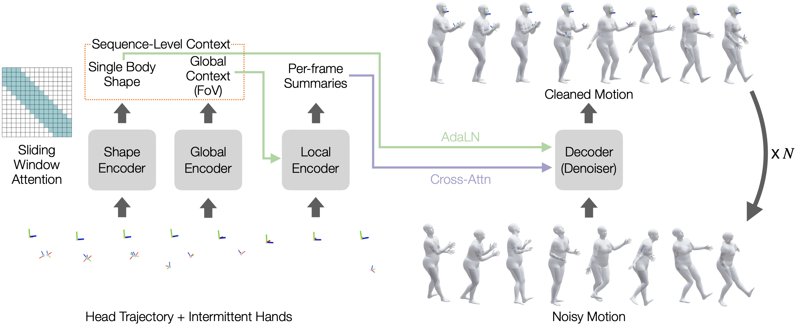
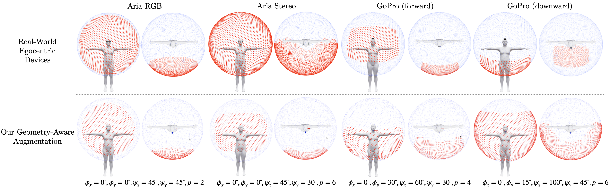

OmniEgoCap:
Device-Agnostic Sequence-Level Egocentric Motion
Reconstruction
Abstract
The proliferation of commercial egocentric devices offers a unique lens into human behavior, yet reconstructing full-body 3D motion remains difficult due to frequent self-occlusion and the "out-of-sight" nature of the wearer’s limbs. While head and hand trajectories provide sparse anchor points, current methods often overfit to specific hardware optics or rely on expensive, post-hoc optimizations that compromise motion naturalness. In this paper, we present OmniEgoCap, a unified diffusion framework that scales egocentric reconstruction to diverse capture setups. By shifting from short-term windowed estimation to sequence-level inference, our method captures a global perspective and recovers invariant physical attributes, such as height and body proportions, that provide critical constraints for disambiguating head-only cues. To ensure hardware-agnostic generalization, we introduce a geometry-aware visibility augmentation strategy that treats intermittent hand appearances as principled geometric constraints rather than missing data. Our architecture jointly predicts temporally coherent motion and consistent body shape, establishing a new state-of-the-art on public benchmarks and demonstrating robust performance across diverse, in-the-wild environments.
In-the-Wild Demo
Comparison with Baseline
Method Overview

Our framework uses a conditional diffusion model to reconstruct full-body motion from head trajectory and intermittently visible hands in egocentric video. Built on an encoder-decoder transformer with local attention, the model efficiently handles long motion sequences while preserving local motion details. Beyond short-term estimation, we perform sequence-level inference to capture a more global perspective, including a single body shape and camera-dependent visibility cues, enabling temporally coherent reconstructions across diverse egocentric device configurations.

To enable device-agnostic generalization, we introduce a stochastic geometry-aware augmentation strategy that exposes the model to diverse egocentric camera geometries during training. By varying field-of-view, camera tilt, aspect ratio, and the resulting hand visibility patterns, the model learns to interpret intermittent hand cues under different viewing conditions. This enables robust reconstruction on unseen devices with different camera setups, without device-specific retraining.
BibTeX
@article{cho2025omniegocap,
title={OmniEgoCap: Device-Agnostic Sequence-Level Egocentric Motion Reconstruction},
author={Cho, Kyungwon and Joo, Hanbyul},
journal={arXiv preprint arXiv:2512.19283},
year={2025},
}